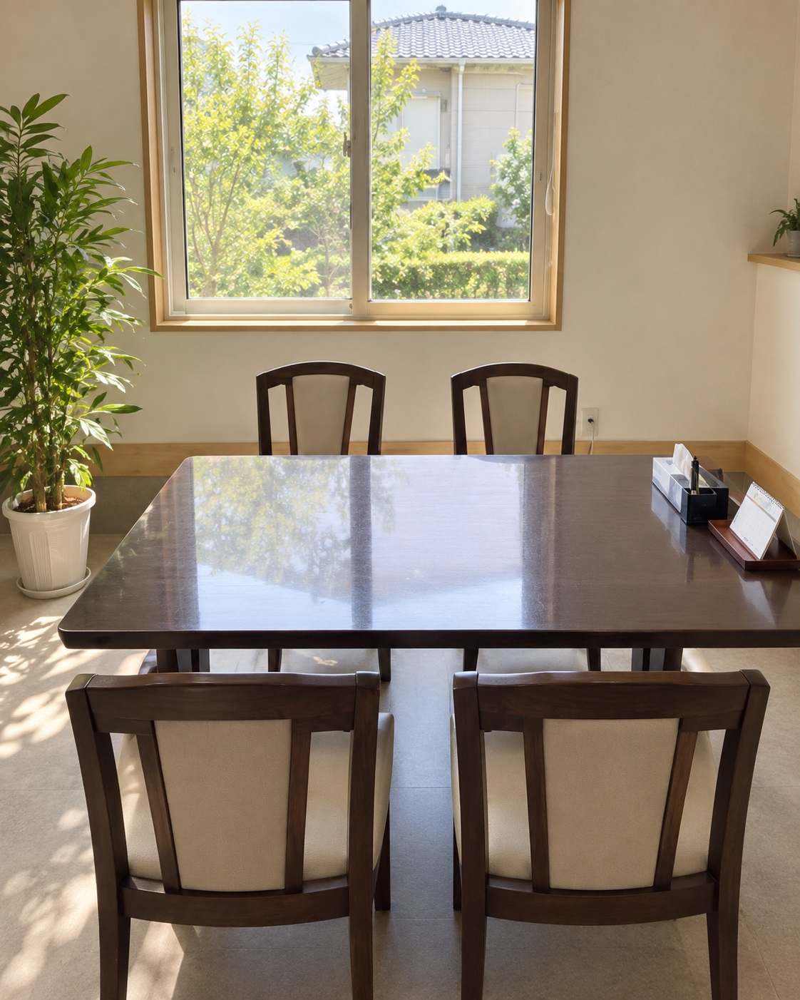
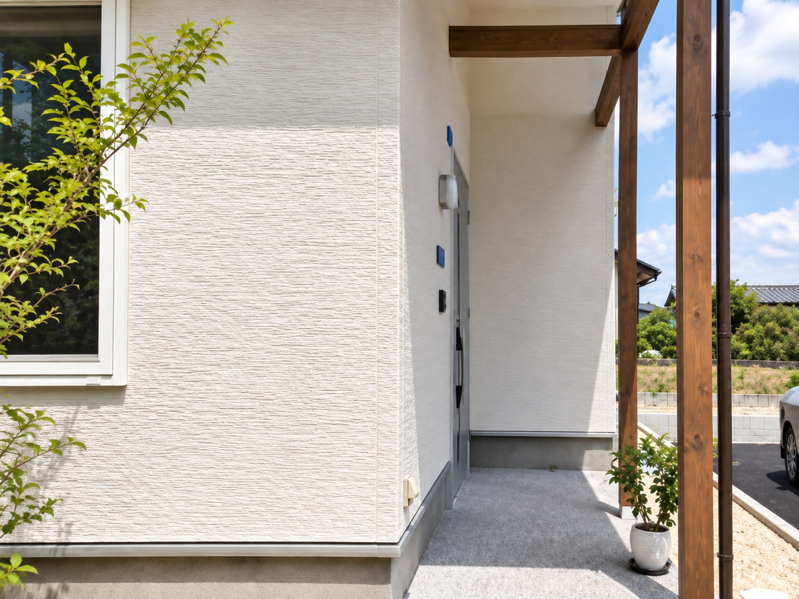
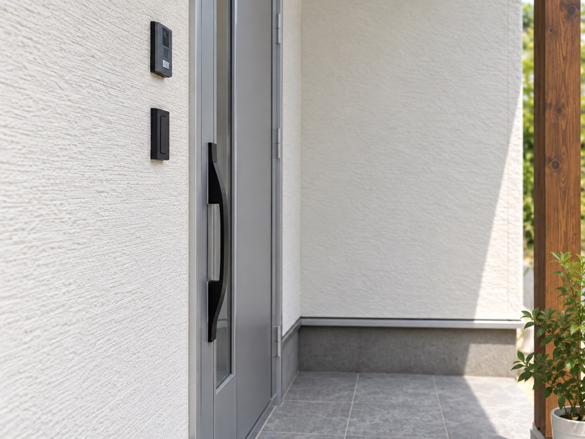
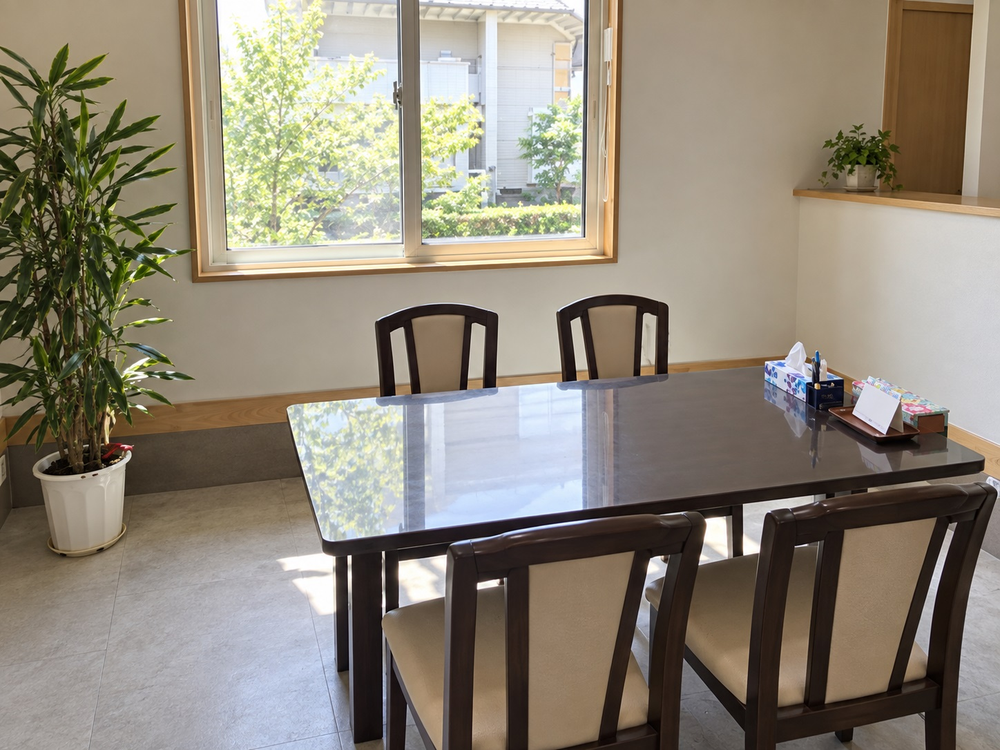

その心配を、
話せる場所が
三春にあります。
相続・遺言・不動産登記から、暮らしの法律相談まで。
まずは、お話を聞かせてください。
電話で相談する 0247-61-6131
電話受付 平日 9:00〜18:00
三春町・郡山市・田村市を中心に対応
ご相談内容
「何を頼めばいいか」から、
一緒に整理します。
手続きの名前がわからなくても、大丈夫です。
- 実家の名義が、親のままになっている 相続登記
- 家族に、財産をどう残すか考えたい 遺言・生前対策
- 親の財産管理が心配になってきた 成年後見・民事信託
- 住宅ローンを完済した 不動産登記
- 借金の返済について相談したい 債務整理
- 会社の設立や役員変更を進めたい 商業登記
このページで、対応内容・費用・相談の流れをご案内します。
03代表者と想い
手続きを進める前に、
大切にしているのは、
聴くこと。
ご本人とご家族が納得できる形を目指して、
状況やお気持ちを丁寧に伺います。
2012年に司法書士として開業して以来、地域の皆さまに寄り添い、
福島で暮らす皆さまを支えています。
- お話をよく聞き、必要な手続きを整理する
- 費用をわかりやすく説明する
このまちで、これからも。
暮らしに寄り添う、身近な法律の専門家として。
司法書士 内藤 俊文
福島県司法書士会所属
- 2011年司法書士試験合格
- 2012年司法書士登録
相続登記
実家の名義変更。
必要な手続きを、一つずつ。
名義が故人のままの不動産や、遠方に相続人がいる場合もご相談ください。
-
01
戸籍の収集
必要な戸籍を調べる
-
02
相続関係の確認
相続人と不動産を確認
-
03
分割内容の整理
合意内容に応じて書類を整える
-
04
登記申請
不動産の名義を変更
書類の整理から申請までサポートします。
相続について相談する05その他の業務
暮らしと事業の節目にも、
身近な相談先を。
不動産登記
売買・贈与による名義変更、抵当権抹消、住所・氏名の変更など。
債務整理
任意整理や、自己破産・個人再生の書類作成などを支援します。
遺言・生前対策
遺言書の作成や財産の整理を通じ、ご家族に想いを伝える準備を支えます。
商業登記
会社設立・役員変更・本店移転など、事業に必要な登記をお手伝いします。
成年後見・民事信託
後見申立ての書類作成や家族信託など、状況に合った財産管理の方法を考えます。
ご相談内容により、対応できる手続きや範囲が異なります。
人生の節目や、事業の変化にともなう手続きも、
地域に根ざした司法書士として、
身近なご相談先でありたいと考えています。
費用の不安も、
そのまま
お聞かせください。
初回面談後に、書面でお見積りします。
料金だけでなく、何をどこまで依頼するかも
確認しながら進められるように。
ご依頼費用の考え方
司法書士報酬
ご相談内容・手続きの範囲に応じた費用
実費
登録免許税・戸籍取得費など
相続人の人数や不動産の数などにより、費用は異なります。
具体的な金額は、状況を伺ったうえでご案内します。
ご相談の流れ
最初のお問い合わせから、
手続きの完了まで。
-
01
お問い合わせ
電話またはフォームで、相談内容をお知らせください。
-
02
お話を伺う
状況を整理し、必要な手続きと書類をご案内します。
-
03
お見積り・ご依頼
費用と対応内容を確認し、ご依頼を検討いただきます。
-
04
手続き・完了のご報告
書類作成や申請を進め、完了内容をご報告します。
遠方のご家族がいる場合も、郵送・オンライン面談を組み合わせて進められます。
よくあるご質問
相談する前の、
気がかりに。

暮らしのこれからを、
一緒に考えるために。
気になることは、
どうぞ遠慮なくご相談ください。
- Q何を相談すればよいか、まとまっていません。
- Aまずは、気になっていることをお知らせください。お話を伺いながら、必要な手続きを整理します。
- Q相続登記の費用は、いくらですか?
- A相続人の人数や不動産の数などで変わります。初回面談後に書面でお見積りします。実費は別途です。
- Q相続人が遠方に住んでいても依頼できますか?
- A郵送・オンライン面談を組み合わせて進められます。必要書類の取り交わし方法もご案内します。
- Q古い名義のままでも相談できますか?
- Aご相談ください。相続関係と不動産の情報を確認し、必要な手続きを検討します。
- Q相談や問い合わせは、どこからできますか?
- Aお電話、またはこのページ下部のフォームから承ります。電話受付は平日9:00〜18:00です。


事務所・アクセス
三春町の、
顔の見える相談先。
司法書士ないとう事務所
- 所在地
- 〒963-7741
福島県田村郡三春町八島台5丁目3-11 - 営業時間
- 9:00〜18:00
- 休業日
- 土曜日・日曜日・祝日
- 対応エリア
- 三春町・郡山市・田村市を中心に、
福島市・二本松市・本宮市・須賀川市・小野町ほか応相談
お問い合わせ
ひとりで抱えず、
まずはお話しください。
ご相談内容と連絡先をお知らせください。
お問い合わせ後、相談日時などをご案内します。
電話受付 平日 9:00〜18:00
送信しました(デモ)
実際のサイトでは、ここでお問い合わせ完了のご案内と
折り返し連絡の目安をお伝えします。